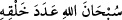

bol bir lutfa mazhar olmuş demektir.
Şeyh Şâzilî (k.s.) Tâcü’l-’Arûs adlı eserinde şöyle der: “Ömrü kısa olan biri:
“Allah’ı mahlûkatı adedince tesbih ederim”
vb. birçok mâna ve sevabı
câmi olan zikirlerle zikretmelidir.” Şeyh’in, ömrün kısa oluşu ile kasdettiği şey, -Allah
bilir- kişinin ölürken, korkunç hastalıklar ve dehşetengiz sebeplerle Allah’a rucû
etmesidir. Durum bu merkezde olunca, bütün meşguliyetlerinden kurtulduktan sonra akla
hayâle gelmeyecek kapıların açılması için sağlam bir niyetle Allah’a yönelemezsen;
ayağına bağ olan şeyler az olduğu halde yine de nefsinin elemlerinden kurtulamaz,
bugününe ve dününe iyice bağlanmış olarak Allah’a rihlet edemez isen, kelimenin tam
manasıyla yüzüstü bırakılmışsın demektir. Şöyle bir hadis-i şerif vârid olmuştur:
“İki nîmet vardır ki bu nimetlerde birçok insan aldanmıştır. Sağlık ve boş vakit.”
(Buhâri, Rikak 1. Tirmizi, Zühd 1.)
Bu hadîsin mânası -Allah bilir- şu şekildedir: Sağlıklı birinin, ya din ile, ya da dünya
ile meşgul olması gerekir. Şayet bunlarla iştigal etmiyorsa, her ikisinde de aldanmış
demektir. Allah Teâlâ, cümlemizi aldanmaktan, hüsrana uğramaktan ve yüzüstü
bırakılmaktan korusun.
Ey Hâfız, uzun ömür boş geçmezse iyidir elbette,
Gayret et ki değerli ömrünün neticesini alasın âhirette.
Denilir ki: Dünya, zekîlerin ganimeti, câhillerin gafletidir.
[155]. Aclûnî, I, 412.
[156]. Buhârî, Zekât, 3.
[157]. Buhârî, Zekât, 3; Nesaî, Zekat, 20.
[158]. Buhârî, Zekat, 3; Müslim, Zekât, 24.
[159]. Aclûnî, I, 432.
[160]. Münzirî, Tergîb, I, 60.
[161]. Bu tür sıkıntı ve dertler sağlığın kıymetini bilmeye vesile olacağından, bu
ifadelerde şükre işaret vardır. * Deylemî, hadis no: 6395.